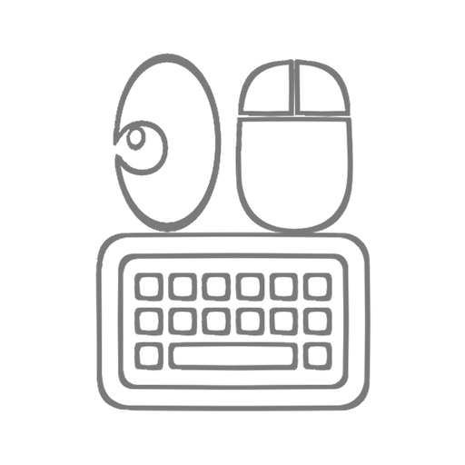
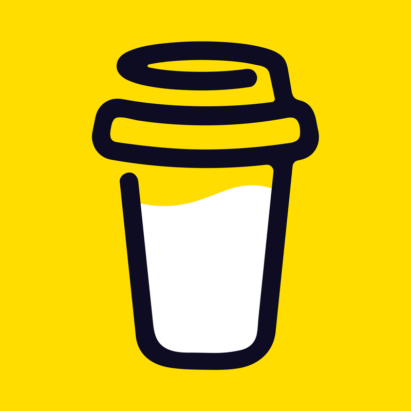

lilcaretropixel (l13l)
lilcaretropixel (l13l)
レトロゲーム開発のためのグラフィックツールアプリ(iOS 18+, macOS 15.1+)
 ManipulationViewer (M16r)
キーボードやマウスの操作を画面上に視覚的に表示するアプリ(macOS 12.4+)
lilcaretropixel (l13l)
レトロゲーム開発のためのグラフィックツールアプリ(iOS 18+, macOS 15.1+)
 lilca's e-DIY
lilca's e-DIY
主に,Blenderでのモデリングについて,解説や垂れ流しをしています.
 By Me a Coffee
アプリや動画がお役に立てたならご検討ください.